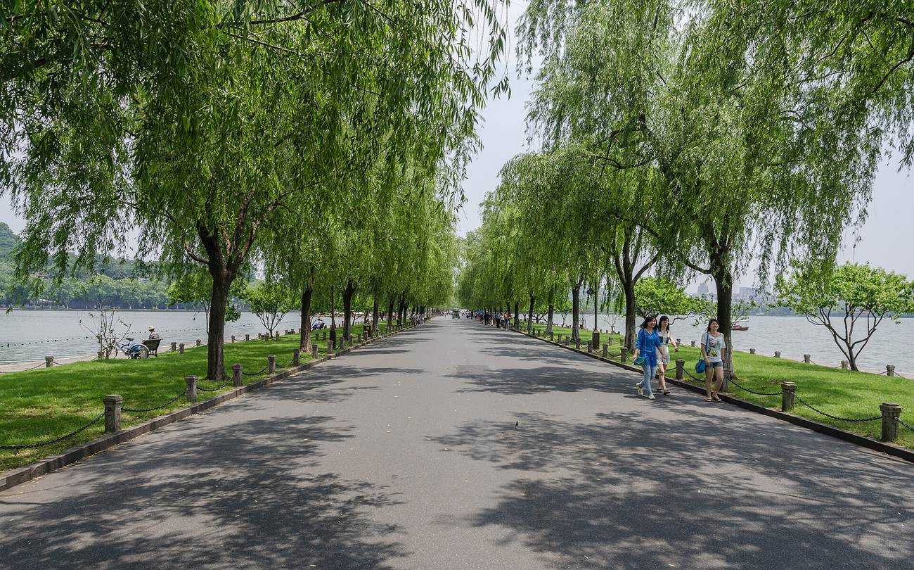
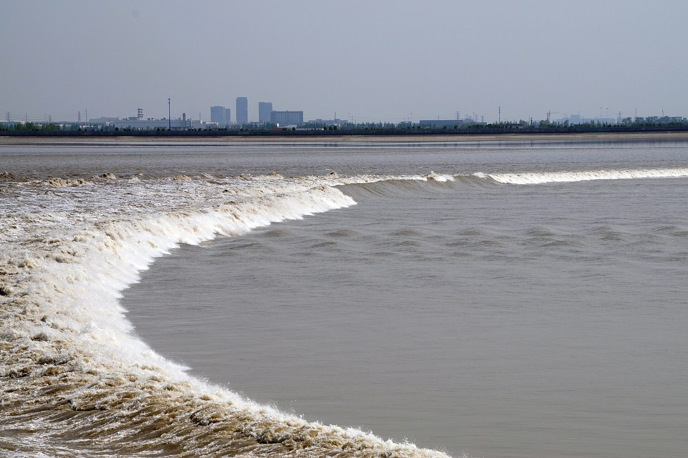
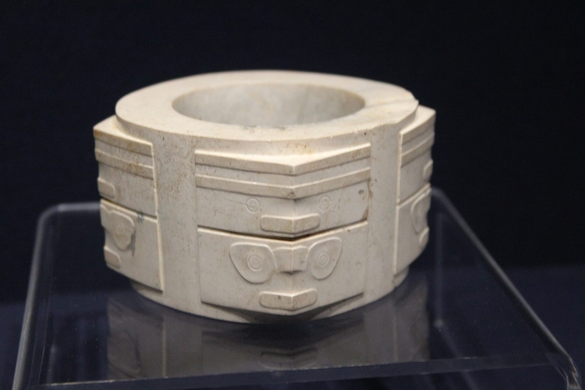
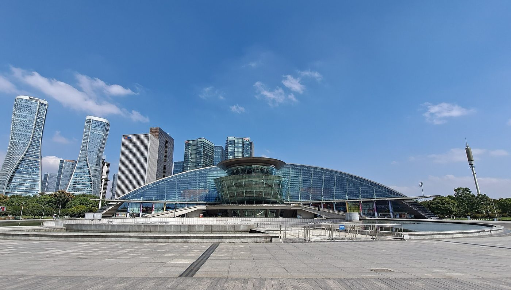
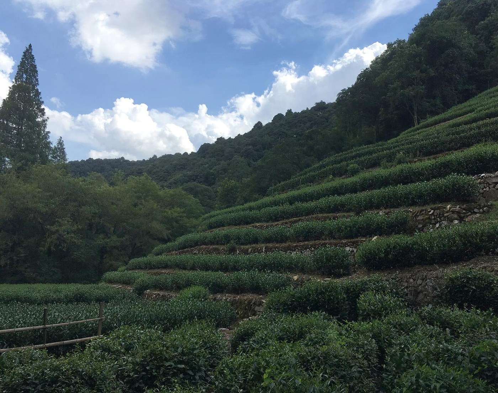
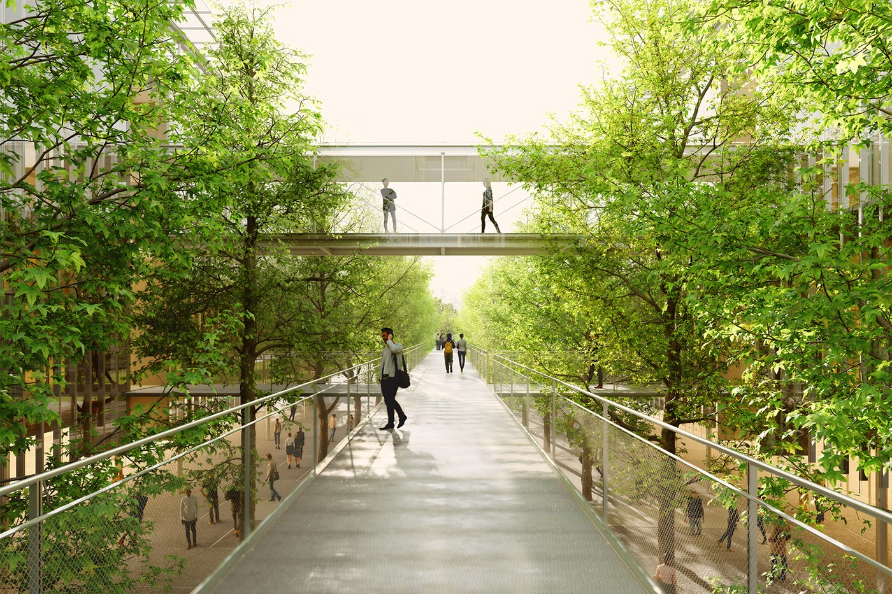
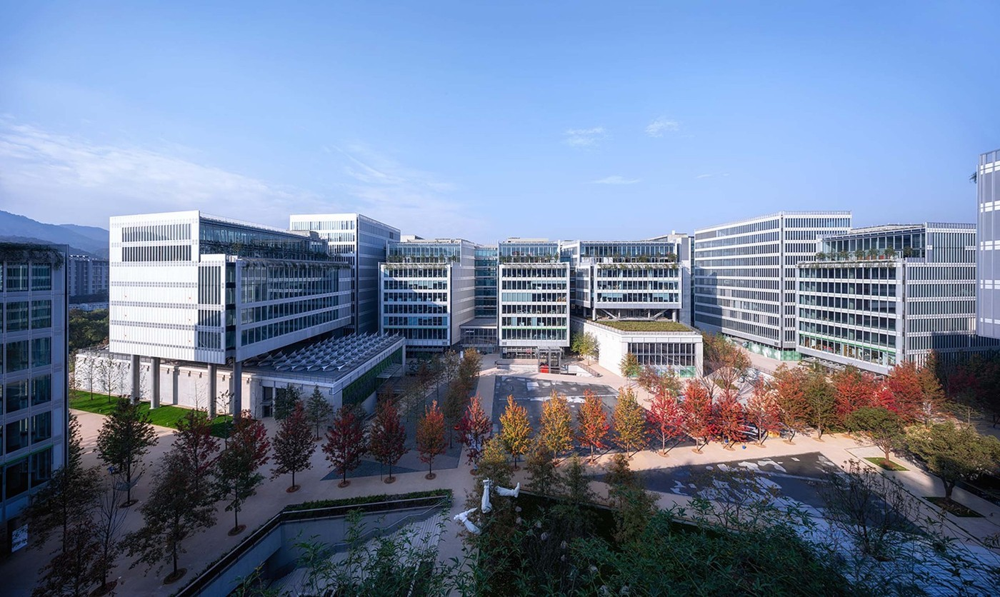

Photo: DXR · Wikimedia Commons · CC BY-SA 4.0
Unit 8 of 8
The City of Hangzhou
Hangzhou is a river city with a lake at its heart: the old town wraps around West Lake and the new business district lines the Qiantang River.
- how Hangzhou is laid out, district by district
- why the Qiantang River makes a giant wave
- Hangzhou's three World Heritage sites
- how to get around, what to see at night, and what to eat
- who is building Tsientang University, where, and what the campus will be like
- District
- One of the parts a Chinese city is divided into for local government.
- Tidal bore
- A wave that runs up a river when a strong tide comes in.
- Causeway
- A raised path or road across water.
- World Heritage site
- A place UNESCO lists as important to all humanity.
- Master plan
- The overall layout of a large site: where buildings, roads and open space go, before each building is designed.
- Photovoltaic (PV)
- Panels that turn sunlight directly into electricity.
- Atrium
- A tall open space in the middle of a building, usually lit from above.
8.1 The shape of the city
The old town wraps around the east side of West Lake. The Qiantang River curves past to the south and east. The new business district, Qianjiang New City, lines the river's north bank, and the tech district, Binjiang, faces it from the south bank.
Hangzhou has 13 parts: 10 urban districts, 1 small city (Jiande) and 2 rural counties. These are the districts a visitor is most likely to see:
| District | What it is | People |
|---|---|---|
| Shangcheng | Old downtown on the east shore of West Lake, with the Hubin lakefront and Hangzhou East station | 1.40 million (2025) |
| Xihu | West Lake itself, its causeways, Lingyin Temple, the tea hills | 1.11 million (2020) |
| Gongshu | North of downtown, where the Grand Canal runs through; Wulin Square shopping is here | 1.12 million (2020) |
| Binjiang | Tech district on the south bank of the river | 0.50 million (2020) |
| Xiaoshan | South of the river, with the airport; the most populous district | 2.18 million (2025) |
| Yuhang | Northwest, home of Alibaba's campus and the Liangzhu ruins | 1.44 million (2025) |
| Qiantang | One of the two newest districts (with Linping), east along the river, created in 2021 | 0.77 million (2020) |
Tap a column heading to sort. 2025 figures where the city has published them, otherwise the 2020 census.
8.2 The river and its wave
The Qiantang is the largest river in Zhejiang. The Qiantang River Bridge, with one deck for cars and one for trains, opened in 1937.
The river is famous for its tidal bore. Hangzhou Bay is shaped like a trumpet, about 100 km wide at its mouth and about 20 km wide farther in. The incoming tide is squeezed into the narrow end and piles up into a wave that runs up the river.
On the biggest tides the wave can reach about 9 m (30 feet) and travel at up to 40 km/h. It is biggest around the Mid-Autumn Festival, which falls in September or October (late September in 2026). The best-known viewing spot is Yanguan town in Haining, about 50 km away.


8.3 Three World Heritage sites
West Lake (listed 2011)
West Lake covers about 6.4 square km but is only about 2.3 m deep on average. People shaped it over centuries by dredging the mud, which built its two causeways and three islands. The Su Causeway, 2.8 km long with six bridges, is named for the poet Su Dongpo, who governed the city in the late 1000s and had the causeway built in 1089.
The Grand Canal (listed 2014)
The longest canal in the world runs 1,776 km from Beijing to Hangzhou. Its oldest sections are about 2,500 years old.
Liangzhu (listed 2019)
Just north of the city, in Yuhang, are the ruins of a walled city from about 3300 to 2300 BC, more than 5,000 years old. Archaeologists found city walls, canals, dams, carved jade and burnt rice.


8.4 Getting around
The metro has 12 lines and about 516 km of track, all built since the first line opened in 2012. Rides start at 2 yuan (about 30 cents), and a one-day pass costs 15 yuan. Several lines, including Line 1 and Line 19, reach the airport.
8.5 The city at night
The towers of Qianjiang New City run a synchronized light show facing the river. It was built for the 2016 G20 summit and uses up to 700,000 LEDs across about 35 buildings.
| Show | Days | Start times |
|---|---|---|
| Qianjiang New City light show | Sunday to Thursday | 7:30 pm |
| Qianjiang New City light show | Friday and Saturday | 6:30 pm and 7:30 pm |
Season of 11 October 2026 to 14 April 2027. Weather can cancel a show.
The outdoor performance on West Lake, "Most Memorable is Hangzhou," also began in 2016 and marked its 10th anniversary in September 2026. Its late-season schedule is not published in the sources here.


8.6 Tea, food and weather
Longjing, meaning "Dragon Well," is one of China's best-known green teas. It is named for a well in Longjing village, in the hills west of the lake. Only tea from a 168 square km zone around West Lake may be sold as "West Lake Longjing." The best leaves are picked before early April.


Five local dishes to try:
- Dongpo pork: slow-cooked cubes of pork belly, named for the same poet as the causeway
- West Lake fish: carp in a sweet-and-sour vinegar sauce
- Longjing shrimp: small river shrimp stir-fried with tea leaves
- Beggar's chicken: a stuffed chicken wrapped in lotus leaves and clay, baked in a hard clay shell that is cracked open at the table
- Pian'erchuan: noodles in a sour, savory broth with pork and bamboo shoots
October averages about 24°C (75°F) by day and 16°C (60°F) at night, a little cooler by the end of the month. November drops to about 18°C (64°F) and 10°C (50°F). Summers are hot and sticky, with July highs around 34°C (93°F), and June brings the "plum rain" season.
8.7 Where Tsientang University fits
Tsientang University (钱塘大学, Qiantang Daxue) is a new research university being built in the southwest of Hangzhou. It is the reason for your visit: your team is designing the lighting for its first phase of buildings, its three piazzas and the bridges between the buildings.
Who is behind it. The money comes from Zhong Shanshan, the founder of Nongfu Spring, China's biggest bottled-water company, and of its parent company Yangshengtang. In January 2025 he said he would give 40 billion yuan (about $5.6 billion) over ten years to build the university. It grows out of the Zhejiang Qiantang Institute of Basic Science Research, founded in November 2023, and the client on the architects' drawings is the Tsientang Institute for Advanced Study. The stated aim is basic science and advanced technology that turns into things people can use, "a new kind of university that China does not yet have." Hangzhou's city plan for 2025 lists getting the university ready as one of the year's projects.
Why Hangzhou. Unit 6 showed that Zhejiang runs on private family businesses. This is the same story in education: a private fortune building a research university, the way Westlake University in Hangzhou (opened 2018) was funded by entrepreneurs, Fuyao University of Science and Technology in Fuzhou by the glass maker Cao Dewang, and the Eastern Institute of Technology in Ningbo by another. Hangzhou now has two of these new privately funded universities: Westlake, open since 2018, and Tsientang, now being built.
Where exactly. The site is in the Zhuantang area of Xihu District, the hilly, forested southwest corner of the city, on the north bank of the Qiantang River, next to Wuchaoshan National Forest Park. Within a kilometer to the south are two arts schools, the China Academy of Art's Xiangshan campus and the Zhejiang Conservatory of Music, and Nongfu Spring's own headquarters is about 2 km to the north. The architects' plan expected a new metro stop just east of the site. On the Unit 8.1 map, that is the far southwest, upstream from Qianjiang New City and the tidal-bore stretch of the river.
8.8 The campus plan
The master plan is by Renzo Piano Building Workshop (RPBW), the Italian firm behind the Centre Pompidou in Paris and the Shard in London, with a Hangzhou design institute (UAD) producing the local drawings. RPBW's partner in charge is Luigi "Gigi" Priano. Design began in 2023; the architects' first full design booklet is dated July 2025, and the construction drawings followed in 2026. On 30 December 2025 a state builder, Zhejiang Construction Engineering, signed the phase-one construction contract, set at 893 days of work (about two years and five months) for a provisional 1.8 billion yuan. In January 2026 the site was still being cleared, and an official estimated about three years to completion. In February 2026 the city put the design out for public comment. No opening date has been published.
The site covers 475,000 square meters, but it is being built in phases. Phase one is two plots: Plot A, 165,000 square meters of academic and public buildings, and Plot E, 55,000 square meters of housing and shops. Plot C (100,000 square meters) is phase two, and Plots B and D come later. The city's February 2026 planning notice counts 338,676 square meters of floor space in phase one (190,696 above ground and 147,980 below) and 399,492 across its three phases; the architects' 2025 booklet, which also counts the later plots, puts the full build at about 635,000.
A campus in a forest. The architects' big idea is that the forest is the subject and the buildings are the background. About 3,000 new trees are being planted. Near the buildings they stand in a regular grid, sweetgum (Liquidambar formosana) around the academic buildings and pagoda trees around the housing, planted at 10 to 12 meters tall and expected to reach 18 to 23 meters. At the edges the planting loosens into natural forest. The landscape borrows two ideas from the classical gardens of this region: jie jing, "borrowed scenery," and lou jing, the "leaking view" of light coming through leaves.
The buildings. Every building follows the same rules, which is what makes the campus read as one place:
- Nothing rises above 20 meters, so the buildings stay below the tree canopy. The whole campus sits on a plateau at 18 meters above sea level; the public piazza is lower, at 11.5 meters, and cars and trucks run underneath in the basement.
- Academic buildings are squares of about 54 by 54 meters with four or five floors. The research labs are underground, where they are quiet and free of vibration. Each building has a central atrium about 12 meters square with an open stair and a skylight at the top.
- Ground floors are glass, lifted and set back, so the buildings seem to float. The base is local stone, the structure exposed steel, the facades low-iron glass with a second glass skin that works as a winter garden.
- A glass photovoltaic canopy floats above every roof, with clear glass around the solar cells so the light underneath is dappled like light under trees.
- Water runs around the academic blocks in shallow pools and channels 60 to 80 centimeters deep, with raised edges for sitting.
- Steel bridges link the academic buildings at the upper levels. Their decks sit about 5 meters above the ground and their undersides will be red, a "fil rouge" (red thread) that marks the university's territory.
Along the piazza stand the buildings open to the public: an auditorium of a few hundred seats, a library built around a central skylit well lined with bookshelves, a sports center with a 25 meter, eight-lane pool under a skylight and a basketball hall with four badminton courts, a dining hall with 684 seats, an exhibition hall and a faculty club. Plot E holds about two dozen housing buildings (the architects say 23 on their website and 24 in the booklet) with 395 apartments, from 50 square meter flats for postdocs to 160 square meter ones for senior professors, built with timber structure as "glass houses in the forest." Some small 9 meter cube meeting rooms sit on steel towers above the canopy, the only tall elements on the site.

The campus at night. The architects' idea for the night is that the buildings "go to sleep" one by one, like a village, while the atria glow when people are inside. There is to be no monumental lighting; the light traces the roads and bridges between buildings and marks the ground floors. That is the brief your team is working to.
How big is a 475,000 square meter site?
- 475,000 square meters is 0.475 square kilometers, or about 47.5 hectares (about 117 acres).
- A soccer field is about 7,140 square meters. 475,000 ÷ 7,140 ≈ 67 fields.
- Central Park in New York is 3.41 square kilometers. 0.475 ÷ 3.41 ≈ 0.14, so the site is about one-seventh of Central Park.
The campus is about the size of 67 soccer fields, or a seventh of Central Park.
RPBW already has one finished project in Hangzhou: OōEli, also called Tianmu Li, finished in 2020 after seven years of design and construction. Sixteen office buildings, most of them nine stories, surround a central park of 90 by 120 meters with a piazza, gardens and a shallow pool that can be drained for concerts and films. It holds offices, art spaces, shops and restaurants. The same ideas run through the university plan: buildings of one height around a shared open space, with trees and gardens between them.

Check your understanding
- What makes the Qiantang tidal bore form?
Show answer
Hangzhou Bay narrows like a trumpet, from about 100 km to about 20 km, squeezing the incoming tide into a wave.
- Name Hangzhou's three World Heritage sites.
Show answer
West Lake, the Grand Canal and the Liangzhu ruins.
- Who is the Su Causeway named after?
Show answer
The poet Su Dongpo, who governed Hangzhou in the late 1000s. Dongpo pork is named for him too.
- Who is paying for Tsientang University, and what business made the money?
Show answer
Zhong Shanshan, founder of Nongfu Spring, the bottled-water company. He pledged 40 billion yuan over ten years.
- What is the height limit for buildings at Tsientang University, and why?
Show answer
20 meters, so the buildings stay below the tree canopy and the campus reads as a forest.
- What time does the Qianjiang New City light show start on a Saturday this season?
Show answer
6:30 pm and 7:30 pm.
Sources
- Hangzhou government: districts, Hangzhou News: 2025 district populations, Wikipedia: Hangzhou, Travel of China: city map, Qiantang District
- Wikipedia: Qianjiang New City and Wikipedia: Qiantang River Bridge
- National Geographic: tidal bores, China Discovery, Wikipedia: Qiantang River
- UNESCO: West Lake, Travel China Guide: West Lake, Wikipedia: Grand Canal, UNESCO: Liangzhu
- Wikipedia: Hangzhou Metro and Travel China Guide: subway
- Xataka: the Qianjiang light show, Hangzhou News: 2026–27 show times, Hangzhou News: "Most Memorable is Hangzhou" at 10
- Wikipedia: Longjing tea, Chinavigators, China Travel: Hangzhou dishes
- The Paper / PEdaily, 24 Jan 2025: Zhong Shanshan's 40 billion yuan pledge and Chao News, 4 Feb 2026: the design plan published for comment, with site, floor areas and the construction contract
- RPBW, "Design Narrative Architecture," Tsientang University schematic design booklet, 21 July 2025 (project file: site, plots, floor areas, building rules, trees, program)
- Renzo Piano Building Workshop: Tsientang Campus, Archiposition: Tsientang University (April 2026) and Knippers Helbig: Tsientang University
- Renzo Piano Building Workshop: the OōEli complex and ArchDaily: OōEli